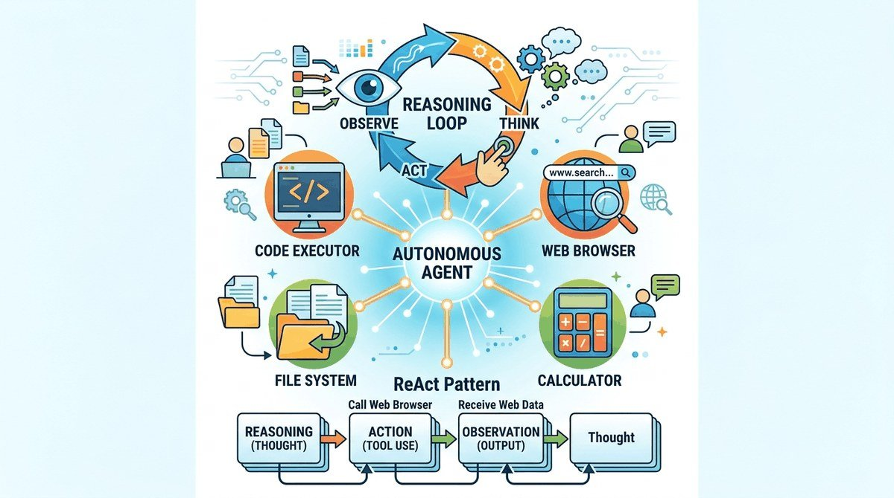

"An agent is anything that can be viewed as perceiving its environment through sensors and acting upon that environment through actuators."
Agent X, Textbook-Quoting AI Agent
Parts I through V built up to "an LLM that can read, write, reason, and perceive across modalities." Part VI takes the next step: an LLM that acts. This chapter is the canonical home for the agent loop (perception, reasoning, action, observation), the four-step pattern that everything in Chapters 26 through 29 specializes. ReAct, planning loops, reflection, the AutoGPT lineage; this is where the prompt patterns from Chapter 12 and the tool-calling APIs from Chapter 11 become full systems.
Chapter Overview
In March 2024, an AI agent called Devin allegedly closed real-world bug bounties unaided, with Cognition Labs releasing demo videos that triggered a year-long debate about whether software-engineering jobs were on a 24-month clock. By 2026 the answer is clearer: not Devin specifically, but Claude Code, Cursor agents, and OpenAI's Codex-CLI now ship pull requests, fix flaky tests, and refactor codebases that humans review rather than write. The difference between an LLM and an agent is the loop: perceive, reason, act, observe, and try again. Every system in this part is a variation on that one architecture.
This chapter covers the full agent foundation stack. It begins with the core agent paradigm, contrasting agents with chains and static workflows and introducing the four agentic design patterns (reflection, tool use, planning, and multi-agent collaboration). It then explores agent memory systems, including episodic, semantic, and procedural memory architectures like MemGPT/Letta and Mem0 (building on the vector database infrastructure from Chapter 31). The chapter covers planning strategies from simple plan-and-execute to tree search methods like LATS, examines reasoning models as agent backbones, and concludes with agent evaluation using benchmarks such as SWE-bench, GAIA, and WebArena.
AI agents represent a paradigm shift from reactive question-answering to proactive problem-solving. This chapter introduces the core agent loop: perceive, reason, plan, and act. The architectural patterns here form the foundation for tool use (Chapter 27), multi-agent systems (Chapter 28), and agent tooling and deployment (Chapter 30).
- Explain the perception-reasoning-action loop (ReAct) and contrast agents with chains and static workflows
- Design agent memory systems using episodic, semantic, and procedural memory with architectures like MemGPT/Letta and Mem0
- Apply planning strategies including Tree of Thoughts, LATS, plan-and-execute, and reflection loops for complex multi-step tasks
- Select reasoning model backbones (o1/o3, Claude Extended Thinking, DeepSeek-R1) and configure thinking budgets for agent loops
- Evaluate agent performance using benchmarks such as SWE-bench, GAIA, WebArena, and OSWorld, and build custom evaluation harnesses
- Architect end-to-end agent systems with orchestration layers, state management, and observability integration
Prerequisites
- Chapter 11: LLM APIs (chat completions, message formatting, streaming)
- Chapter 12: Prompt Engineering (system prompts, chain-of-thought, structured outputs)
- Chapter 8: Reasoning & Test-Time Compute (reasoning models, thinking tokens)
- Familiarity with Python async programming and basic state machine concepts
Sections
- 26.1 What Makes an LLM an Agent (and What Doesn't) An AI agent is an LLM operating in a loop. Entry
- 26.2 Planning & Agentic Reasoning Planning is what separates a tool-calling chatbot from a genuine problem solver. Entry
- 26.3 Reasoning Models as Agent Backbones Reasoning models collapse multi-step agent scaffolding into a single model call. Intermediate
- 26.4 Agent Evaluation & Benchmarks An agent you cannot measure is an agent you cannot improve. Intermediate
- 26.5 End-to-End Agent System Architecture: A Deployment Blueprint A production agent is far more than a model in a loop. Advanced
- 26.6 Memory Architecture for Agents The agent-specific slice: plan memory, tool-call history, task episodes, and state checkpointing. (Conversational-memory mechanics live in Section 26.6.) Advanced
Objective
Construct a ReAct agent from scratch that can answer multi-hop factual questions like "What university did the inventor of the lithium-ion battery's PhD advisor work at?" It will search Wikipedia, read pages, reason about partial answers, and decide when to stop. You will end with a debuggable agent you can extend in Chapters 27 and 28.
Steps
- Step 1: Wikipedia tool. Wrap two functions:
wiki_search(query) -> list[title]usingwikipedia.search, andwiki_read(title) -> strreturning the first 2000 chars ofwikipedia.page().content. Test that both return clean text for "Akira Yoshino". - Step 2: ReAct prompt. Write a system prompt: "You can call tools by emitting JSON like
{\"tool\":\"wiki_search\",\"query\":\"...\"}. After each observation, emit a Thought, then an Action or a final Answer." Parse the JSON with a regex; if parsing fails, send the error back to the model. - Step 3: Agent loop. Implement a
while step < 10loop: call GPT-4o-mini with the running transcript, parse the response (Thought/Action or Answer), execute the tool, append observation, repeat. Log every step totrace.jsonl. - Step 4: Test on 10 multi-hop questions. Use HotpotQA dev set (download via
datasets.load_dataset("hotpot_qa","fullwiki")) or hand-write 10 questions. Measure exact-match accuracy on the final answer. Expect 40 to 60% on a first pass. - Step 5: Add reflection. After the agent emits its answer, ask a second LLM call: "Is this answer fully supported by the observations? If no, what's missing?" If the critic says no, restart the loop with that feedback. Re-measure: aim for +10 to +15 points.
- Step 6: Failure analysis. Open 5 failed traces. Categorize the errors: bad search query, missed key page, premature answer, tool-format hallucination. This is the heartbeat skill of Chapters 26 to 29.
- Step 7: Library shortcut. Re-implement in
smolagents(15 lines:CodeAgent(tools=[WikipediaSearchTool()], model=...)) and compare accuracy. The from-scratch version teaches the loop; the library version is what ships.
Expected Output
Expected time: 4 to 5 hours. Difficulty: intermediate. Artifact: a working multi-hop QA agent with traces, plus an accuracy comparison table.
What's Next?
Next: Chapter 27: Tool Use, Function Calling & Protocols. An agent without tools is just a chatbot. Chapter 27 covers how that changes: function calling APIs (OpenAI, Anthropic), schema design, MCP (the 2024 open protocol that became a de-facto standard), A2A for agent-to-agent calls, and the AG-UI standard that lets agents talk to users. Tool use is the moment an LLM stops being read-only.